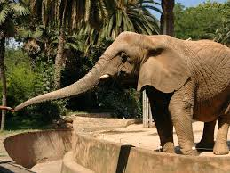
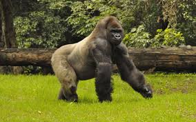

El paquete Basico incluye: Ingreso al zoológico, presentación de aves en el auditorio techado, Villa Australiana, Herpetario, Selva Tropical, Rancho Veterinario, Área de Crianza, CIA Museo Interactivo, Maravillas del Kalahari, Monkeyland y Michilía. Niños de 3 a 11 años pagan boleto NIÑO. De 12 en adelante pagan boleto ADULTO. Tercera edad pagan boleto NIÑO. (DEBIDO A LA EMERGENCIA SANITARIA DEL COVID19 EL INGRESO A LOS ALBERGUES DE LEMUR Y MONO ARDILLA EN MONKEYLAND QUEDAN FUERA DE SERVICIO HASTA NUEVO AVISO AL IGUAL QUE EL MUSEO INTERACTIVO CIA Y LOS TALLERES EN EL RANCHO VETERINARIO, AGRADECEMOS MUCHO SU COMPRENSIÓN.)
Precio de Adultos $95
Precio de Niños $55
 El paquete PREMIER incluye: Ingreso al zoológico, presentación de aves en el auditorio techado, Villa Australiana, Herpetario, Selva Tropical, Rancho Veterinario, Área de Crianza, CIA Museo Interactivo, Maravillas del Kalahari, Monkeyland y Michilía. Además de una visita al Acuario Guadalajara y Kiboko Bwawa, un recorrido en el Safari Masai Mara, un ingreso a Antártida, el Reino de los Pingüinos y un recorrido en el Tren Panorámico. Niños de 3 a 11 años pagan boleto NIÑO. De 12 en adelante pagan boleto ADULTO. Tercera edad pagan boleto NIÑO. (DEBIDO A LA EMERGENCIA SANITARIA DEL COVID19 EL INGRESO A LOS ALBERGUES DE LEMUR Y MONO ARDILLA EN MONKEYLAND QUEDAN FUERA DE SERVICIO HASTA NUEVO AVISO AL IGUAL QUE EL MUSEO INTERACTIVO CIA Y LOS TALLERES EN EL RANCHO VETERINARIO, AGRADECEMOS MUCHO SU COMPRENSIÓN.)
El paquete PREMIER incluye: Ingreso al zoológico, presentación de aves en el auditorio techado, Villa Australiana, Herpetario, Selva Tropical, Rancho Veterinario, Área de Crianza, CIA Museo Interactivo, Maravillas del Kalahari, Monkeyland y Michilía. Además de una visita al Acuario Guadalajara y Kiboko Bwawa, un recorrido en el Safari Masai Mara, un ingreso a Antártida, el Reino de los Pingüinos y un recorrido en el Tren Panorámico. Niños de 3 a 11 años pagan boleto NIÑO. De 12 en adelante pagan boleto ADULTO. Tercera edad pagan boleto NIÑO. (DEBIDO A LA EMERGENCIA SANITARIA DEL COVID19 EL INGRESO A LOS ALBERGUES DE LEMUR Y MONO ARDILLA EN MONKEYLAND QUEDAN FUERA DE SERVICIO HASTA NUEVO AVISO AL IGUAL QUE EL MUSEO INTERACTIVO CIA Y LOS TALLERES EN EL RANCHO VETERINARIO, AGRADECEMOS MUCHO SU COMPRENSIÓN.)
Precio de Adultos $265
Precio de Niños $185
El paquete DIAMANTE incluye: Ingreso al zoológico, presentación de aves en el auditorio techado, Villa Australiana, Herpetario, Selva Tropical, Rancho Veterinario, Área de crianza, CIA Museo Interactivo, Maravillas del Kalahari, Monkeyland y Michilía. Además de un viaje en el SkyZoo (se requiere estatura de más de 1.10 cm en los menores de edad e ir acompañados por un adulto), una visita al Acuario Guadalajara y Kiboko Bwawa, un paseo en el Safari Masai Mara, un recorrido en el Tren Panorámico y una visita a Antártida, el Reino de los Pingüinos. Niños de 3 a 11 años pagan boleto NIÑO. De 12 en adelante pagan boleto ADULTO. Tercera edad pagan boleto NIÑO. DEBIDO A LA EMERGENCIA SANITARIA DEL COVID19 EL INGRESO A LOS ALBERGUES DE LEMUR Y MONO ARDILLA EN MONKEYLAND QUEDAN FUERA DE SERVICIO HASTA NUEVO AVISO AL IGUAL QUE EL MUSEO INTERACTIVO CIA Y LOS TALLERES EN EL RANCHO VETERINARIO, AGRADECEMOS MUCHO SU COMPRENSIÓN.
Precio de Adultos $315
Precio de Niños $235
Zoologico El Mijito
ZoologicoMijito@gmail.com
Creado por: Corona Robles Juan Antonio
Numero: 55-85-68-65-43